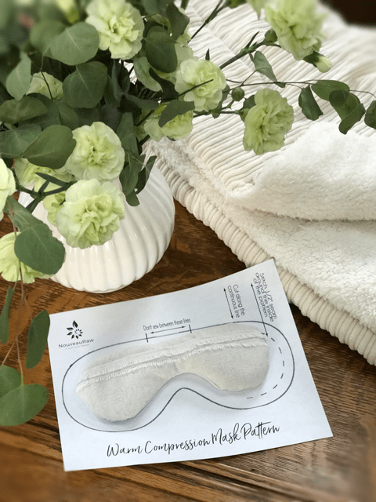

How to make a Warm Eye Compress
 If you have been diagnosed with Meibomian gland dysfunction, blepharitis, dry eye, or any other irritating eye disorder, applying warm compresses is a very common part of therapy.
If you have been diagnosed with Meibomian gland dysfunction, blepharitis, dry eye, or any other irritating eye disorder, applying warm compresses is a very common part of therapy.
With Meibomian gland (oil-producing glands) dysfunction the eyelids fail to secrete enough oil to prevent tears from evaporating too quickly, and this results in dry eye symptoms.
Throughout my site, I have mentioned that I don’t typically use microwaves, but I do make exceptions. One is for my homemade heat packs. I use them on many different areas of my body; for menstrual cramps, abdominal muscle cramps, neck stiffness, my little peepers (eyes), or if I just want to warm the foot of the bed.
So as you can imagine, they can be made in all shapes and sizes, but in this post, I am going to show you how to make warm compresses for the eyes.
Warm compresses may be applied to the eyelids to help loosen up hardened oil that clogs the oil glands in the eyelids. For many people with chronic meibomian gland dysfunction, heat treatment is an effective ‘maintenance’ treatment.
You don’t have to be diagnosed with a dry eye condition to benefit from warm compresses. If your eyes are tired, irritated (allergies), or if you have been spending a lot of time on the computer, they may bring you great relief.
When applying these warm eye compressions to your eyes, use this time wisely, it is a prime time to administer some self-love/care. It’s only a few minutes out of your day, so turn on some soft music, fire up the essential oil diffuser, wrap up in a warm blanket, and let yourself relax. Think positive thoughts, send healing to your eyes, and give thanks for all the insight that they provide. Be sure to take long deep breaths, releasing any and all tension in the body.

To prevent irritation or possible burning, please exercise great care when applying any type of heat to your eyes. Please consult your doctor for specific advice and instructions. Bear in mind that heat may promote inflammation, so do not overuse.
Also, for those of you who are thinking of adding essential oils to your compression pillows and have a diagnosed eye condition, I would advise against it. The oils may irritate the eyes further. If you wish to enjoy the healing benefits of aromatherapy, fire up your essential oil diffuser. Now let’s jump into some ways you can do warm compresses on your eyes.
Different types of warm compresses?

Warm Washcloth
The main drawback to this form of warm compression is that it doesn’t retain heat long enough to be effective and has to be reheated. Follow these steps:
- Wash your hands before handling the warm compress, so you do not transfer germs.
- Get a soft, clean washcloth and fold into thirds lengthwise.
- Turn on tap water so that it runs warm, then filling the basin. Place the cloth in the water until well saturated.
- Do not squeeze the excess water from the cloth. Bending over the sink, raise the cloth to your eyes (keeping them closed) and gently press the cloth to the eyes.
- Place the washcloth back in the water every 15 seconds to keep it warm.
- Reapply to your eyes and repeat these steps for about five minutes.
Homemade Warm Compression Baggy
These can easily be made with a sewing machine or a thread and needle. But not necessarily required. I will share below a no-sew option. I find that these work better than the warm washcloth because they retain the heat longer. Plus you can lay down on the couch or bed to relax during this time. These can be made to fit the contour of your nose, or you can make a rectangle shaped one.
- For these, you can fill the bag with; uncooked rice, popcorn, cherry pits, buckwheat, or flaxseeds.
- Simply fill a cloth bag with your choice of filling.
- Heat in the microwave for roughly thirty seconds, carefully test the temperature before using.
- Place on a clean plate every time, so it doesn’t contaminate or dirty the compress.
- Microwaves vary in wattage, so start with 20 seconds and see how warm it is. I don’t recommend ever going over 30 seconds.
- WARNING! Always touch test the heat level of the eye compress by placing it on the back of your wrist BEFORE placing it on your eyes. If it feels too hot, remove immediately and wait 1-2 minutes before applying.
- The compress should be comfortable warm NOT HOT to be effective.
- It is common to experience some blurry vision after removing the compress. The glands in the eyes are releasing beneficial fluids that help to moisten our eyes. It should clear up within a few minutes.
- Place over the eyes for three up to twenty minutes. (or until it cools)
- Don’t sew? No problem. Add flaxseeds to a clean tube sock and tie shut. Heat as above.
Purchase a warm eye compress
- If you don’t have the time or means to make your own; I suggest the following; Thermalon Dry Eye Compress. Replenishes moisture, refreshes eyes relieves dryness and is washable and reusable.
- Microwave 20 seconds.
- Apply 3-5 minutes.
- May be used as often as desired for mild to moderate dry eye discomfort.
- Talk with your doctor about using the ThermalOn dry eye compress. Not for use on children under two years of age.
- Currently reviewing: Tranquileyes XL with Microwavable Beads for Severe Dry Eye Relief by Eye Eco. I will do a followup regarding this product.
Supplies Needed:
- 1/4 yard of natural cotton fabric
- Eye mask pattern – Click to download (Warm Compression Mask Pattern by amie sue)
- Sewing machine or needle and thread if sewing by hand
- Stick pins (to hold fabrics together)
- Scissors
Print the Pattern
- You can design your own bag, but I created a pattern for you as well.
- Download the PDF and print the pattern.
- Trim the paper down but don’t worry about cutting the actual pattern out yet.
- The pattern will seem gigantic, but trust me on this one. I made many of the bags before I nailed the perfect size.
Cutting the fabric
- If the fabric is wrinkly, give it a quick iron.
- Cut two pieces of fabric that are at least 1″ larger than the pattern.
- If you have a fabric with a print on it, place the fabric with the right sides together before stacking and cutting them.
- Pin the eye mask pattern to the layers of fabric, making sure that the pins are inside the pattern lines.
- Cut the pattern out, so you end up with two layers of the same shape.
- Remove the pins and paper pattern.
Sewing the mask together
- Pin the fabric together again.
- Again, if you used a one-sided patterned fabric, make sure the patterns are both facing inward.
- Stitch a 1/2 ” seam allowance all around the edge leaving an aperture (opening) large enough big to flip it inside out. One inch is a good size.
- If you have larger hands, feel free to make the opening larger.
- Whether you use a sewing machine or you are sewing by hand… double stitch the opening on both ends.
- See the 2nd photo below. The two pins sticking out are my markers on where to start and stop my sewing.
- If making the mask with the nose edge shape, it’s important that you stitch a smooth curve when you go around the edges.
- Make small cuts on the curves.
- This step will allow having a nice shape once you flip it inside out.
- Be careful not to cut the seam!
- Turn your eye mask right side out and smooth out the edges with your finger or a spoon handle (as I did) on the inside.
Filling and Completing the Bag
- Place a funnel tip into the opening and pour in 1/3 – 1/2 cup of seeds.
- Tuck the raw fabric edges of the opening inward, so the edges match up with the eye mask edge, and pin shut.
- Close the aperture with a hidden stitch. (needle and thread)
- This should be done by hand to little seeds don’t cause your sewing machine needle to jam.
Care:
- These bags can’t be washed, so make sure that your eyes and face are nice and clean before using the bag.
- If you have an eye infection, don’t allow others to use it. Go ahead and create a bag for each family member. Use a black paint marker and write their names on each one.
- Since these are easy to make, replacing them every so often is advised.
- I store mine in a ziplock baggy when I am not in use.
I hope you found this helpful. After posting my initial posting regarding my diagnosis of Meibomian Gland Dysfunction (click here to read it if you missed it), many of you reached out asking me more questions regarding eye compressions, dietary supplements, and cleansers. So I found it fitting to share more of what I am experiencing and learning through this process. Many blessings, amie sue
© AmieSue.com